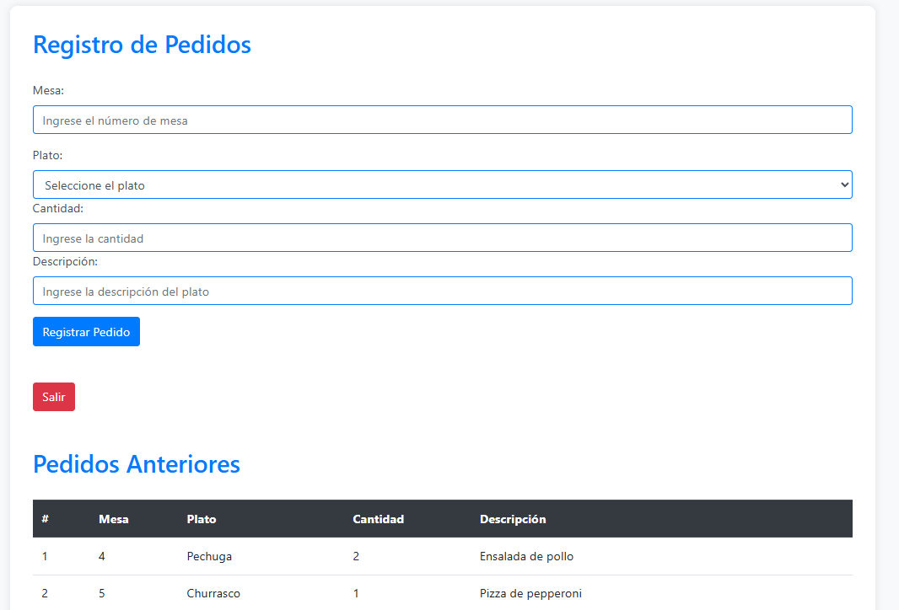
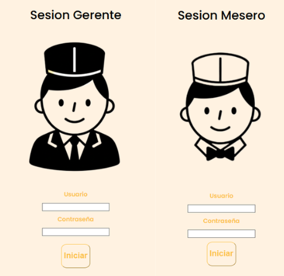
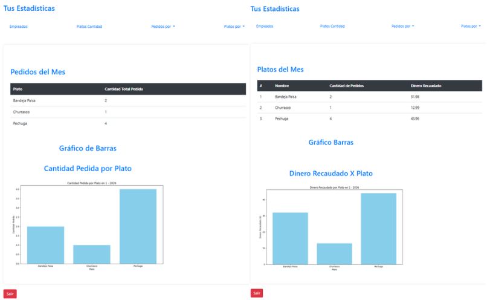
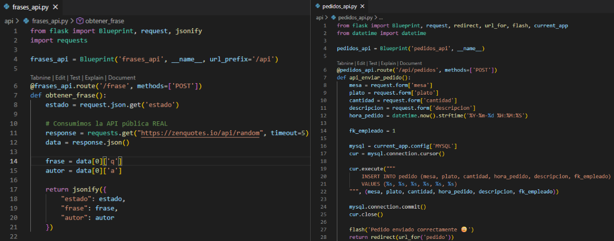
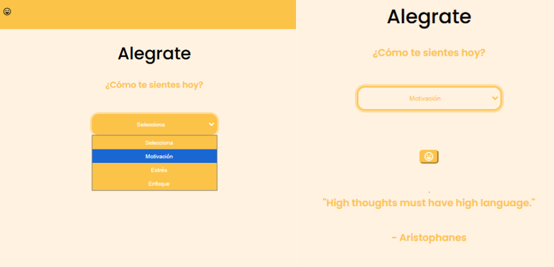

Aplicacion web para micro restaurantes
Magasoft es una aplicación web desarrollada con Flask y MySQL para la gestión de restaurantes, que permite administrar pedidos, usuarios y estadísticas de ventas mediante una arquitectura basada en rutas y APIs, con un diseño enfocado en la escalabilidad y la claridad del sistema.
- HTML
- CSS
- Python
- Flask
- Flask-MySQLdb
- Backend
- Frontend
- MySQL
- XAMPP
- APIs
Gestión de Pedidos
Permite a los meseros registrar pedidos por mesa de forma rápida y organizada, incluyendo plato, cantidad y descripción. Los pedidos se almacenan en la base de datos y se visualizan en tiempo real.

Roles y Autenticación de Usuarios
El sistema maneja distintos roles como mesero, cocina y gerente, cada uno con acceso a vistas específicas según sus permisos, garantizando un flujo de trabajo seguro y ordenado.

Estadísticas y Reportes
El gerente puede visualizar estadísticas detalladas como platos más vendidos, pedidos por día, mes o año y dinero recaudado. Los datos se presentan mediante tablas y gráficos dinámicos generados desde el backend.

Arquitectura Backend con APIs
El proyecto está estructurado usando Flask Blueprints, donde varias rutas funcionan como APIs REST, devolviendo datos en formato JSON. Esto permite reutilizar la lógica tanto para vistas web como para posibles aplicaciones móviles o integraciones futuras.

Consumo de APIs Externas
Magasoft integra APIs públicas, como una API de frases motivacionales, donde el usuario interactúa mediante un formulario y recibe una respuesta dinámica, demostrando consumo de servicios externos sin JavaScript.
